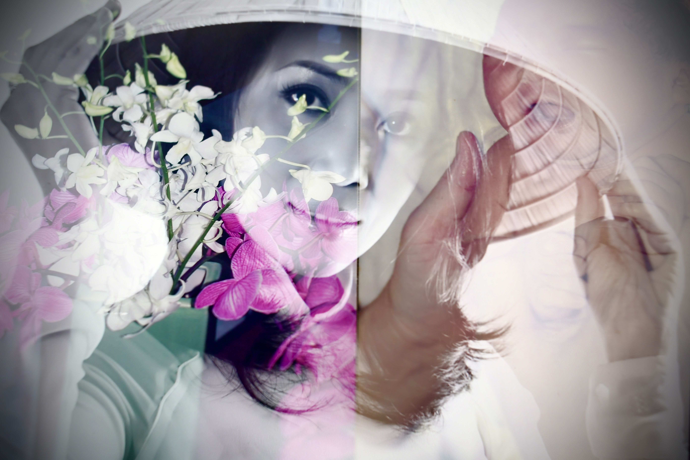
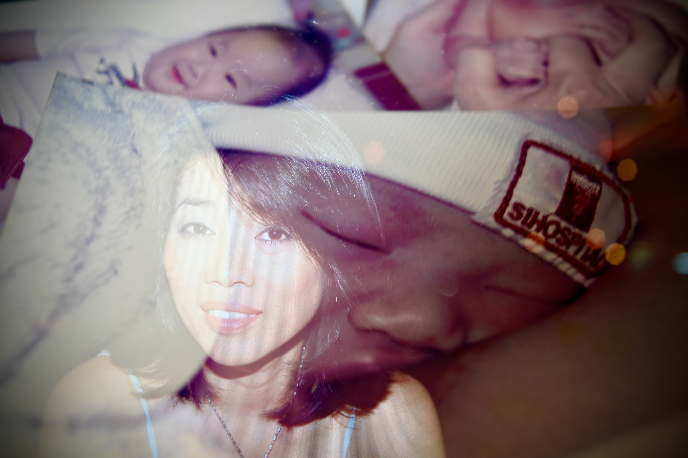
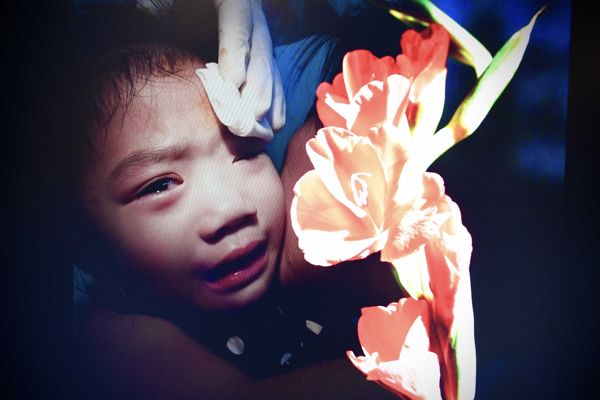
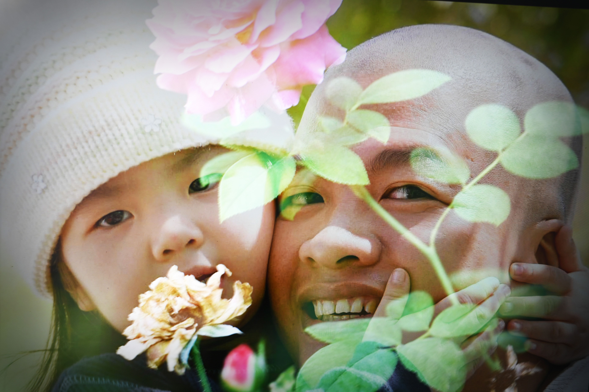
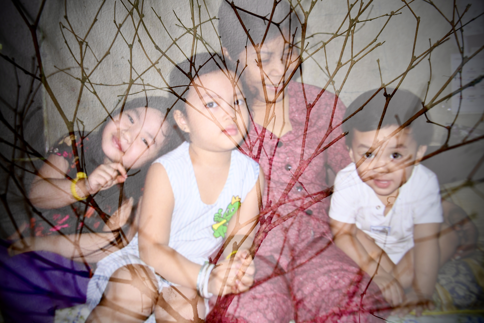
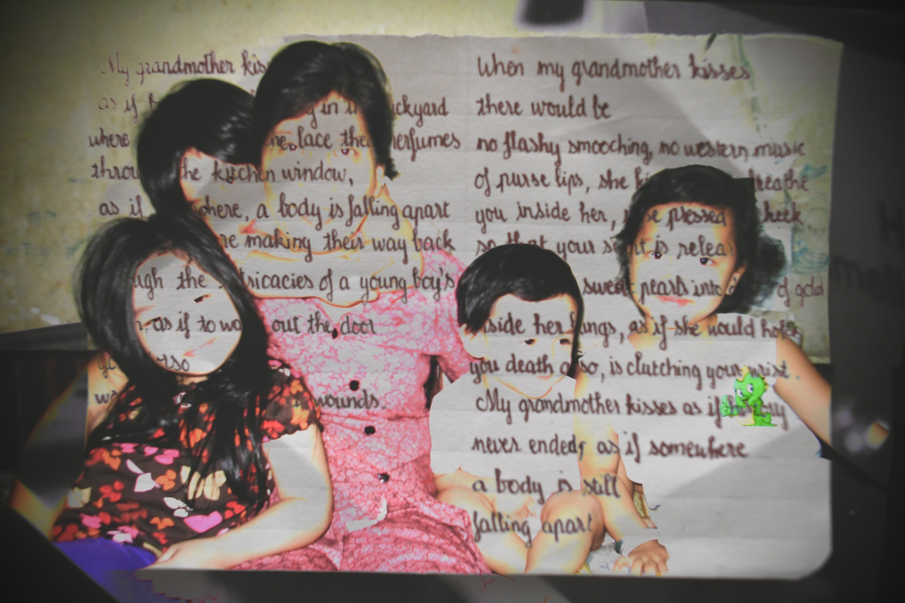
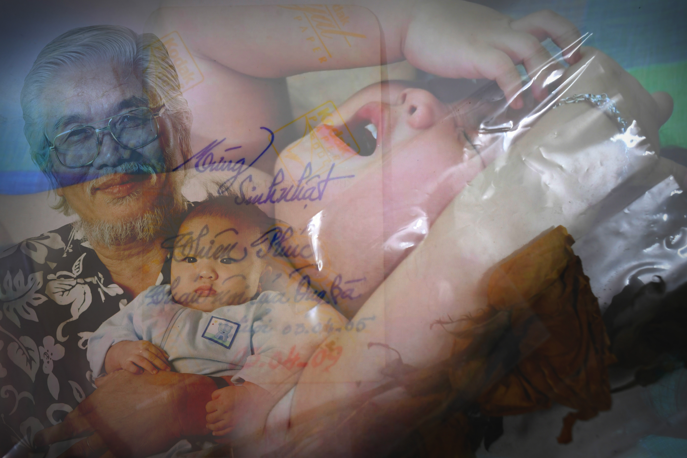
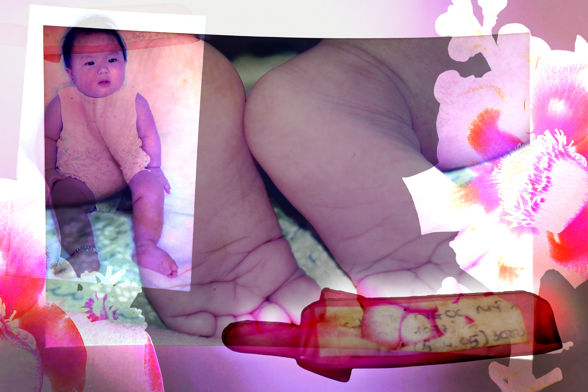
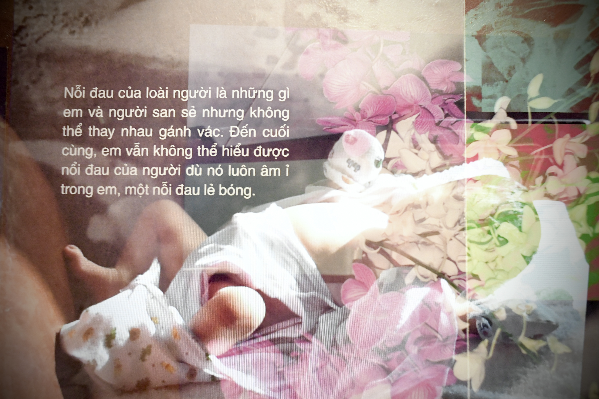

à ởi à ời

qua bàn tay mềm đặt trên lưng trẻ

hai tay siết chặt, mẹ bồng như giữ lấy
để mùi tóc, mùi da
được lưu lại trong hơi thở

để tiếng khóc tan dần thành im lặng

dẫu sau này đời dọc ngang vạn dặm

chân mỏi rồi lại thèm sà vào lòng ấm ngày xưa

bấu víu vào như thuở ta còn bé

và đâu đó, những phần thân thể

vẫn đi theovề phía tiếng à ơi.